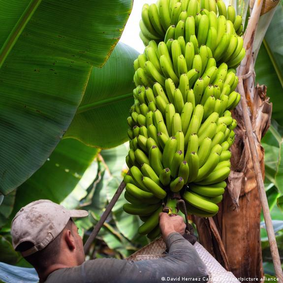

Nuestra Operación





Bananos Ochoa es una empresa distribuidora especializada en guineo verde premium, abasteciendo comercios, plazas de mercado y clientes institucionales con producto uniforme, fresco y de alta rotación.
Barranquilla - Atlántico
gerencia@bananosochoa.com
© 2026 BANANOS OCHOA